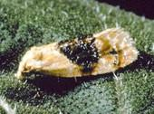
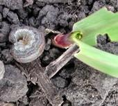

Dhanuka Agritech, one of India’s leading agrochemicals formulations company launched new pesticides for paddy, cotton and chilli crops in Ludhiana.
With addition of these new products, Dhanuka Agritech would be able to provide a complete solution to the farmers and help improving overall health of cotton and chilli crops.
CHEMPA an effective, pre and post-emergence herbicide controls broad leaf weeds, sedges and grassy weeds in paddy; APPLY is a new technology based systemic insecticide to control brown plant hopper whereas the most awaited insecticide- LARGO, a solution to the cotton and chilli farmers is useful in controlling major insects in these crops.
According to Dhanuka Agritech, CHEMPA is based on Japanese technology. It is mainly absorbed through plants root, translocate in plants and inhibit root and shoot growth of weeds. CHEMPA is highly effective and requires low doses. It will help paddy farmers to reduce cost for weed control in their fields.
APPLY is one of the best technology available in the world to control BPH which is a serious pest that can cause significant harm in later stages of paddy crops. It has potential to cause losses upto 50 percent and in past has caused serious damage in some of the major rice growing states. Its 3-way action gives complete control on BPH. Just after spray, BPH stops feeding, thus checks losses immediately. APPLY also stops egg-laying by BPH, thus helps reducing resurgence of BPH. It also requires less number of sprays than other products available in the market, so it even helps in reducing cost of paddy farmers, the company claims.
The company further claims, the “Green Chemistry Challenge “award winner- LARGO is the world’s best thripicide and offers excellent control of important insects on the cotton and chilli crops such as Thrips (Thrips tabaci), Spotted boll worm (Earias Vittella), Leaf eating caterpillar (Spodoptera litura) and Pod borer (Helicoverpa armigera). LARGO acts on the target pest either by ingestion of treated leaf or through cuticular contact. LARGO is a fast acting insecticide on target insect which ceases insect feeding within minutes of first exposure. Application of LARGO between 50-70 days after sowing in cotton and two rounds of LARGO spray alternate with other chemistries in between 45-90 days in chilli is recommended. Being a Green triangle molecule, LARGO is also very safe to beneficial insects
Speaking on the launch of the new products, Partha Sen Gupta, Sr. General Manager – Marketing , Dhanuka Agritech said, “Since inception, Dhanuka Agritech has been committed to provide world class complete agro solutions to the farmers. In keeping with this thought, we have introduced new products for paddy, cotton and chilli growers. All the products are based on new chemistry which will help farmers to get better yield from their crops. All our products are well accepted by the farming community and our regular new introductions is the reason our agri solutions are consistently considered by our farmer friends.”
Dhanuka Agritech would be launching CHEMPA and APPLY across all major paddy growing regions in India in the coming days. The product would soon be available through a wide network of dealers and distributors. The company, which also manufactures and sells more than 90 world class products in India, has plans to market the new products through its promotional activities.
Small water-soaked spots on leaves; elongated water-soaked spots in shape of an eye; straw colored lesions with reddish brown center develop from water-soaked lesions.
Fungus
Disease emergence favored by cloudy weather, high humidity and low night temperatures or wet leaves from precipitation or irrigation.
Disease can be controlled through the application of appropriate foliar fungicides.
Setts not rooting; central soft portion of set has red discoloration which turns brown-black; cavities in infected internodes; In older canes leaves may be yellowing and plant appears withered; cut stem has a strong smell of pineapple
Fungus
Primarily a disease of setts; fungus enters cut ends of stem or through other wounds
The most effective method of managing the disease is through the use of resistant sugarcane varieties; if planting varieties that are susceptible to the disease then plant them in dry, well-draining soils
Yellowing, drying leaves; elongated red lesions on leaf midribs which may develop a straw yellow center; splitting open the stalk lengthwise reveals reddish patches of tissue interrupted by white areas; vascular tissue may also be red
Fungus
Disease has eliminated several varieties of sugarcane
Planting resistant varieties of sugar cane is the most effective method of controlling the disease; remove crop debris from the plantation to reduce inoculum levels; rogue diseased plants; harvest crop promptly if growing a susceptible variety; treating seed pieces with hot water prior to planting can reduce the incidence of the disease but foliar fungicide application has proved to be an ineffective method of control
Stunted growth of sugarcane stools; profuse production of tillers; shortened internodes; stems thin with narrow, erect leaves; black whip-like structure emerging from terminal bud
Fungus
Disease transmitted through infected setts and by wind
The disease can be successfully controlled by planting varieties of sugarcane which are resistant to the disease; disease can usually be eliminated from seed pieces by hot water treatment prior to planting; infected plants should be removed
White "pencil line" extending the entire length of leaf lamina; etiolated leaves; leaf tips drying out resulting in a scalded appearance
Bacterium
Disease emergence favored by water stressed plants
The most effective method of preventing the disease is to plant resistant sugarcane varieties; treatment of seed cane with hot water to clean the material prior to planting can help to prevent the disease
Maize is one of the most important grain crops in the world. The main season of maize cultivation is rainy season and hence prone to many diseases and pests. The management of important disease and pests are briefly discussed below.
Weeds, Insectes & Diseases causes harms to the crop and farmers lose an estimated average of 37% of their rice crop due to pests & diseases every year. In addition to good crop management, timely and accurate diagnosis of these pest & diseases and proper chemical management can significantly reduce these losses.
Economic threshold is about one moth per two plants
Dipel ES, Baythroid XL, Coragen, Prevathon, Besiege, Chlorpyrifos 4E AG, Govern 4E, Hatchet, Lorsban 4E, Lorsban Advanced, Nufos 4E, Vulcan, Warhawk, Whirlwind, Yuma 4E, Cobalt Advanced, Stallion, Exirel, Tombstone, Tombstone Helios, Delta Gold, Asana XL, Declare, Grizzly Too, Kendo, Lambda-Cy, LambdaStar, Lambda-T, Lamcap, Nufarm Lambada-Cyhalothrin 1EC, Paradigm VC, Province, Silencer, Silencer VXN, Warrior II, and Mustang Maxx cutworm damage
Economic threshold is one cutworm per square foot, or 25-30% stand reduction.
Baythroid XL, Sevin 4F, Sevin XLR Plus, Besiege, Lorsban 15G, Chlorpyrifos 4E AG, Govern 4E, Hatchet, Lorsban 4E, Lorsban Advanced, Nufos 4E, Vulcan, Warhawk, Whirlwind, Yuma 4E, Cobalt Advanced, Stallion, Exirel, Tombstone, Tombstone Helios, Delta Gold, Asana XL, Declare, Grizzly Too, Kendo, Lambda-Cy, LambdaStar, Lambda-T, Lamcap, Nufarm Lambada-Cyhalothrin 1EC, Paradigm VC, Province, Silencer, Silencer VXN, Warrior II, and Mustang Maxx grasshopper on stalk
Treat when eight or more adults per square yard are present in the field, or when 20 or more per square yard are found in field margins.
Baythroid XL, Besiege, Chlorpyrifos 4E AG, Govern 4E, Hatchet, Lorsban 4E, Lorsban Advanced, Nufos 4E, Vulcan, Warhawk, Whirlwind, Yuma 4E, Cobalt Advanced, Stallion, Tombstone, Tombstone Helios, Delta Gold, Asana XL, Declare, Grizzly Too, Kendo, Lambda-Cy, LambdaStar, Lambda-T, Lamcap, Nufarm Lambada-Cyhalothrin 1EC, Paradigm VC, Province, Silencer, Silencer VXN, Warrior II, and Mustang Maxx
Economic threshold is one to two adults, or 10 to 12 larvae, per plant.
Baythroid XL, Sevin 4F, Sevin XLR Plus, Besiege, Chlorpyrifos 4E AG, Govern 4E, Hatchet, Lorsban 4E, Lorsban Advanced, Nufos 4E, Vulcan, Warhawk, Whirlwind, Yuma 4E, Cobalt Advanced, Stallion, Tombstone, Tombstone Helios, Delta Gold, Asana XL, Declare, Grizzly Too, Kendo, Lambda-Cy, LambdaStar, Lambda-T, Lamcap, Nufarm Lambada-Cyhalothrin 1EC, Paradigm VC, Province, Silencer, Silencer VXN, Warrior II, and Mustang Maxx midge
There are no effective chemical controls currently recognized for this pest. The best management strategy has been rotation to crops other than sunflower in the vicinity of large infestations. Selecting hybrids for their ability to tolerate midge infestations should be considered when choosing seed. sf moth
Economic threshold (at onset of bloom) is one to two adults per five plants.
Biobit HP, Dipel DF, Xentari DF, Dipel ES, Baythroid XL, Sevin 4F, Sevin XLR Plus, Coragen, Prevathon, Besiege, Chlorpyrifos 4E AG, Govern 4E, Hatchet, Lorsban 4E, Lorsban Advanced, Nufos 4E, Vulcan, Warhawk, Whirlwind, Yuma 4E, Cobalt Advanced, Stallion, Exirel, Tombstone, Tombstone Helios, Delta Gold, Asana XL, Declare, Grizzly Too, Kendo, Lambda-Cy, LambdaStar, Lambda-T, Lamcap, Nufarm Lambada-Cyhalothrin 1EC, Paradigm VC, Province, Silencer, Silencer VXN, Warrior II, and Mustang Maxx sf seed weevil
Economic threshold is from four to eight adults per plant (oil) and one to two per plant (confection). Treat for red weevils at R5.1 to R5.4 stage of sunflower plant development.
Baythroid XL, Besiege, Chlorpyrifos 4E AG, Govern 4E, Hatchet, Lorsban 4E, Lorsban Advanced, Nufos 4E, Vulcan, Warhawk, Whirlwind, Yuma 4E, Cobalt Advanced, Stallion, Tombstone, Tombstone Helios, Delta Gold, Asana XL, Declare, Grizzly Too, Kendo, Lambda-Cy, LambdaStar, Lambda-T, Lamcap, Nufarm Lambada-Cyhalothrin 1EC, Paradigm VC, Province, Silencer, Silencer VXN, Warrior II, and Mustang Maxx stem weevil
Economic threshold is one adult per three plants during late-June to mid-July time frame.
Baythroid XL, Sevin 4F, Sevin XLR Plus, Besiege, Chlorpyrifos 4E AG, Govern 4E, Hatchet, Lorsban 4E, Lorsban Advanced, Nufos 4E, Vulcan, Warhawk, Whirlwind, Yuma 4E, Cobalt Advanced, Stallion, Tombstone, Tombstone Helios, Delta Gold, Asana XL, Declare, Grizzly Too, Kendo, Lambda-Cy, LambdaStar, Lambda-T, Lamcap, Nufarm Lambada-Cyhalothrin 1EC, Paradigm VC, Province, Silencer, Silencer VXN, Warrior II, and Mustang Maxx
Weeds, Insectes & Diseases causes harms to the crop and farmers lose an estimated average of 37% of their rice crop due to pests & diseases every year. In addition to good crop management, timely and accurate diagnosis of these pest & diseases and proper chemical management can significantly reduce these losses.
Weeds, Insectes & Diseases causes harms to the crop and farmers lose an estimated average of 37% of their rice crop due to pests & diseases every year. In addition to good crop management, timely and accurate diagnosis of these pest & diseases and proper chemical management can significantly reduce these losses.
Weeds, Insectes & Diseases causes harms to the crop and farmers lose an estimated average of 37% of their rice crop due to pests & diseases every year. In addition to good crop management, timely and accurate diagnosis of these pest & diseases and proper chemical management can significantly reduce these losses.
Weeds, Insectes & Diseases causes harms to the crop and farmers lose an estimated average of 37% of their rice crop due to pests & diseases every year. In addition to good crop management, timely and accurate diagnosis of these pest & diseases and proper chemical management can significantly reduce these losses.